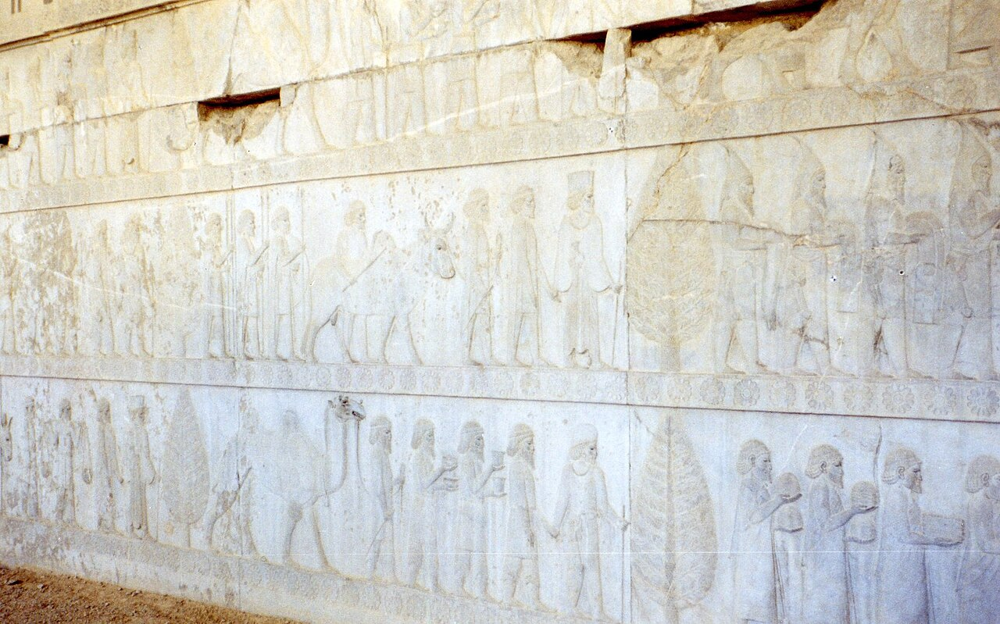
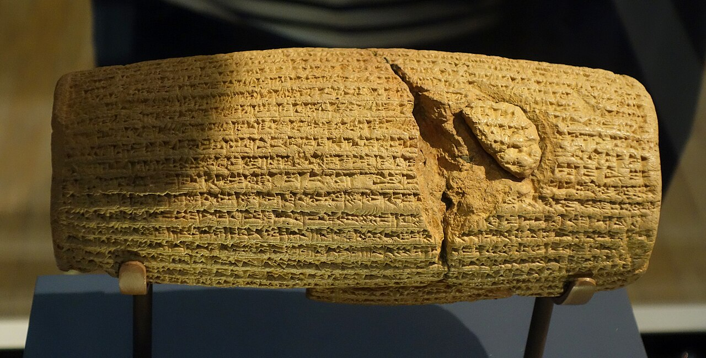
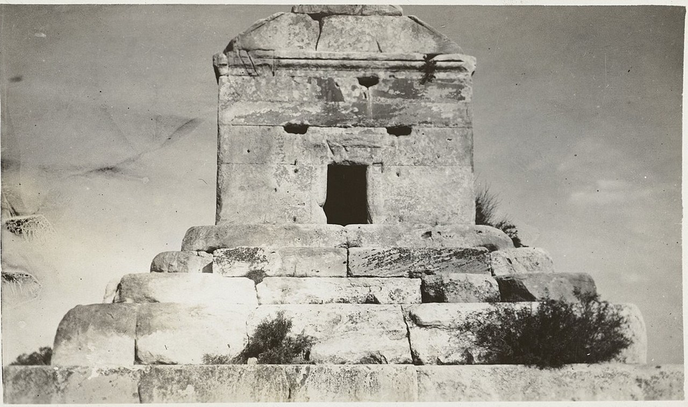
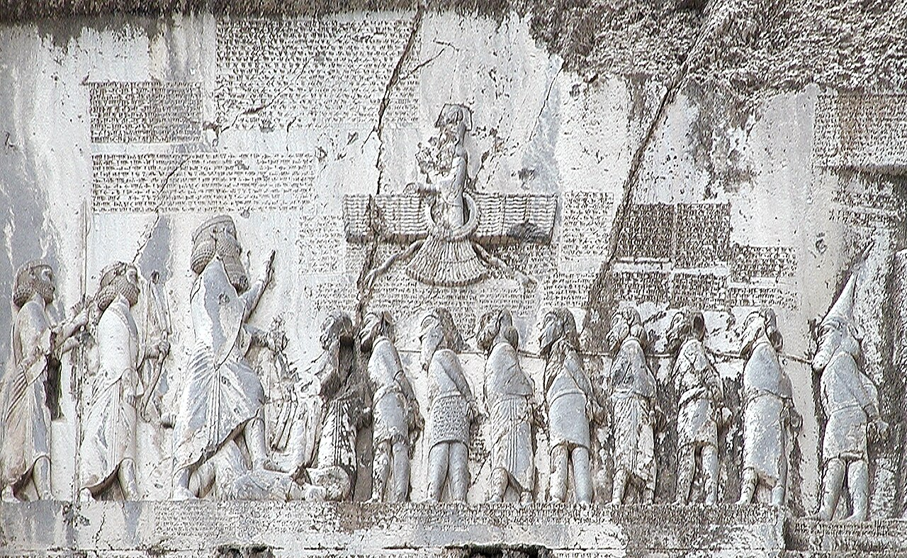
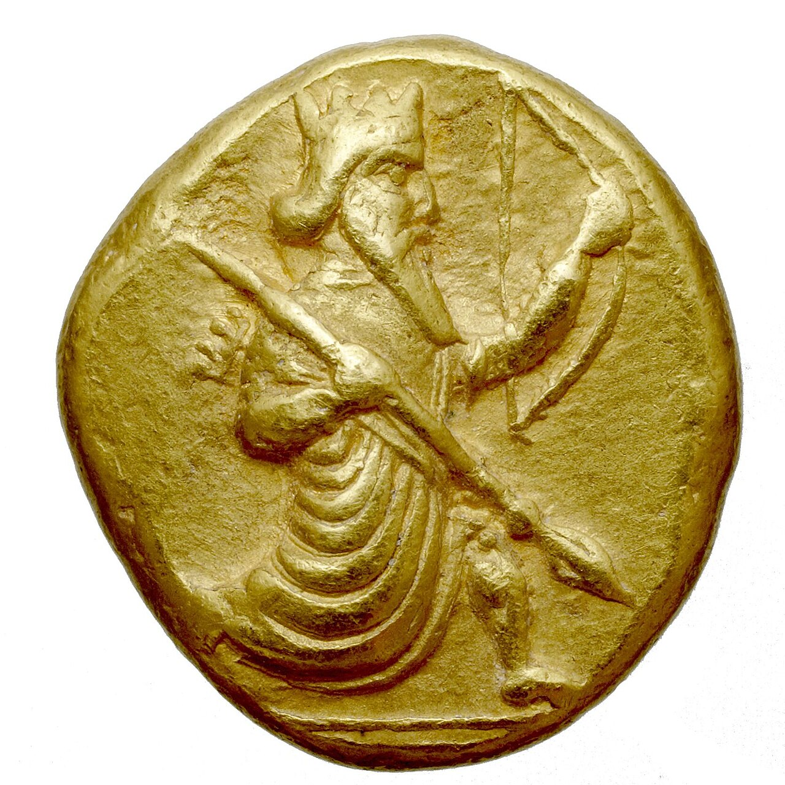
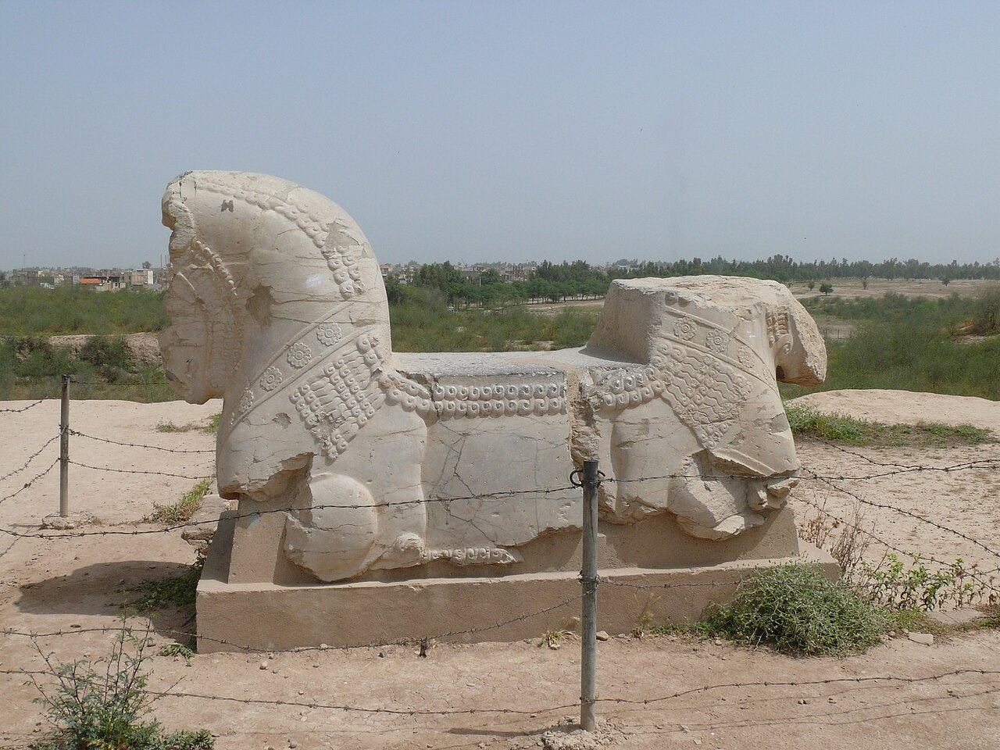
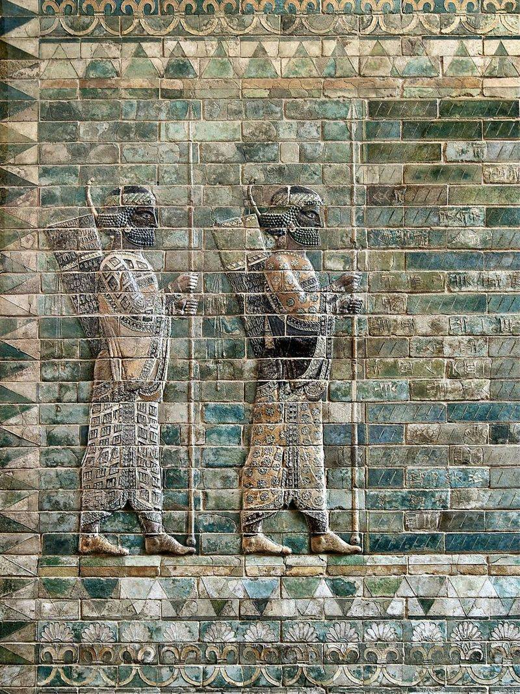
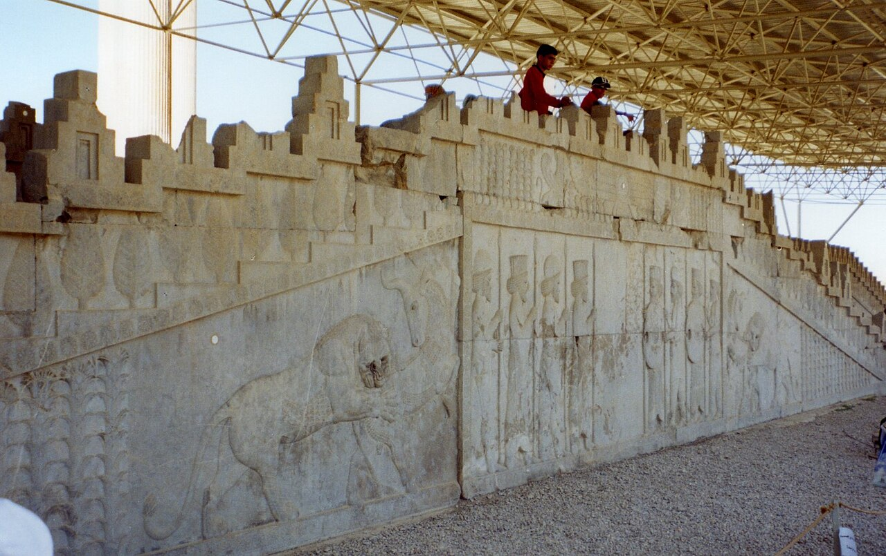

歴史・地理 History & Geographyペルシアは、 なぜ当時 世界最大の 帝国に なれた？ いまのイランの南の小さな国から興ったペルシアは、35年ほどで、エジプトからインダス川までをひとつにまとめました。決め手は、戦いの勝ち方より、勝ったあとの治め方にありました。「王の道」の地図と、広い国をつなぐしくみの図で、その中身をのぞいてみませんか。
2026.11.09 UP 約8分で読める 文：SOMOSOMO編集部
写真：ペルセポリスの浮き彫り Persepolis delegations／Pentocelo（2006年、パブリックドメイン）
Previously
前回は、アルファベットの話でした。エジプトの字を借りた働き手に始まり、地中海を行き来したフェニキアの商人が22の字を広め、ギリシャ人が母音を足し、エトルリアを経てローマの字になりました。一人の発明ではなく、1,000年がかりのリレーでした。
バビロン、前539年10月。いまのイラクにあった、当時の世界でも指折りの大都市に、東から来た軍が入りました。抵抗らしい抵抗もないまま町は明け渡され、バビロンの王ナボニドゥスは捕らえられます。軍を送ったのは、ペルシアの王キュロス2世でした。
ペルシアは、いまのイランの南西部、ペルシア湾に近いパールサ（ギリシャ語でペルシス）の地から興った国です。前550年に北の大国を破ってから35年ほどで、西はエジプトから東はインダス川までを従えます。ペルシアは、なぜ当時世界最大の帝国になれたのでしょうか。
このとき破ったのは、いまのイラン北西部のメディア。続いて小アジア（いまのトルコ）のリュディアとバビロンを従え、次の王たちの代にエジプトとインダス川のほとりが加わります。広さは最大で約550万平方キロメートル、日本の14倍あまり。電話も鉄道もない時代に、それをどうまとめたのかを見ていきます。
In a word
征服した人々のやり方 を残したまま、道と金貨と書きことば でつないだから。
01
The Tolerant Conqueror
勝ったあと、 相手の神と 暮らしを 残した
バビロンに入ったキュロスが何をしたかを伝えるのが、1879年にバビロンの遺跡で見つかった「キュロスの円筒碑文」です。長さ22.5センチの、樽の形をした焼いた粘土で、メソポタミアの言葉の楔形文字が45行刻まれています。
文は、バビロンの神マルドゥクがキュロスを選び、町に平和を取り戻させた、と語ります。前の王ナボニドゥスは人々を苦しめた王として責められ、キュロスは、連れ去られていた人々を故郷に帰し、各地の神殿を建て直した恩人として描かれています。

樽の形の粘土 大英博物館にあるキュロスの円筒碑文です。表面いっぱいに楔形文字が刻まれ、中ほどから右にかけて、割れ目と欠けた跡が見えます。写真：Cyrus Cylinder, British Museum ／Daderot（2024年、CC0）
攻め入った側の王が、負けた町の神の名を借りて、自分が王になった理由を語っているのです。旧約聖書でも、キュロスは、バビロンに連れてこられていたユダヤの人々にエルサレムへ帰ることを許した王として、たたえられています。
この円筒碑文は、1971年にイランの王（シャー）が帝国2,500年の式典で「最初の人権憲章」として広め、国連の事務総長にも複製が贈られました。いまも「最古の人権宣言」と呼ばれることがあります。
ただし多くの歴史学者は、この呼び方を、いまの考えを昔に当てはめたものとみています。中身は、神殿の土台に納める「建物の碑文」という、メソポタミアで昔から続く型の文で、バビロンとマルドゥクの祭りを立て直した記念の文だ、と研究者は述べています。
それでも、キュロスが負けた町の神と祭りを壊さず、自分の後ろだてにしたことは確かです。ギリシャの人々も、彼を、征服した土地の習慣や宗教を認める王として語り伝えました。逆らわなければ神も暮らしも守られるとわかれば、町は戦わずに門を開きます。バビロンが抵抗なく明け渡されたのも、その一例と考えられます。
キュロスは前530年、中央アジアの遊牧の人々との戦いで亡くなったと伝えられます（戦死ではなかったという伝えもあります）。墓は、最初の都パサルガダエ（いまのイラン南西部）に残る石造りの建物だと考えられています。

石を積んだ王の墓 パサルガダエにある、キュロスの墓と考えられている建物です。大きな切り石を何段も重ねた台の上に、切妻屋根の小さな部屋が載っています。1925年に撮られた写真です。写真：Graf van Cyrus, Pasargadae ／A.G.A. van Eelde、アムステルダム国立美術館所蔵（1925年、CC0）
02
Provinces and Gold
州に分け、 お金と単位を そろえた
キュロスの息子で2代目の王カンビュセスは、前525年にエジプトを従えます。ところが前522年、カンビュセスが亡くなると、帝国の各地で反乱が起こりました。王位についたのは、キュロスの遠い親戚を名のる貴族、ダレイオス1世です。
ダレイオスは反乱をしずめると、そのいきさつを、バビロンとエクバタナ（メディアの都だった町。いまのハマダーン）を結ぶ古い道を見下ろす崖に刻ませました。これがベヒストゥン碑文です。高さ約15メートル、幅約25メートル。同じ文が3つの言葉で刻まれ、のちに楔形文字を読み解く手がかりになりました。

崖に刻まれた王の勝利 ベヒストゥン碑文の浮き彫りです。左の大きな人物の前に、首を縄でつながれた人々が一列に並び、上には翼のある像が浮かんでいます。まわりを囲む細かな欄が、3つの言葉の文です。写真：Behistun inscription reliefs ／Hara1603（2005年、パブリックドメイン）
大きな人物がダレイオスで、縄でつながれた9人は、反乱を起こして王を名のり、ダレイオスに敗れた者たちとされます。帝国は、王が代わるたびに割れかねない危うさを抱えていました。そこでダレイオスは、治め方そのものを組み立て直します。
ギリシャの歴史家ヘロドトスによれば、ダレイオスは帝国を20の州に分け、州ごとに毎年納める税の額を決めました。州を治める長官は「サトラップ」と呼ばれます。州の数は時期や数え方によって変わり、20から30あまりまでの記録があります。
ただし、長官に全部を任せたわけではありません。州には、王に様子を知らせる書記、お金を預かる係、兵を率いる指揮官が、長官とは別に置かれました。一人に力が集まりすぎないためです。さらに「王の目」と呼ばれる使いが、毎年州を見回りました。
お金のしくみも整えます。決まった重さと質の金属でできたお金、つまり硬貨は、小アジアのリュディアで生まれました。リュディアを従えたキュロスがそれを受け継ぎ、ダレイオスは新しい金貨を作らせます。ダレイコス金貨と呼ばれ、銀貨20枚分の値打ちがありました。

弓と槍を持つ王 ダレイコス金貨です。冠をかぶった人物が、ひざを曲げた姿勢で、弓と長い槍を持っています。リュディアの都だったサルディスで作られた1枚とされ、フランス国立図書館が持っています。写真：Monnaie : Darique, Or, Sardes, Lydie ／フランス国立図書館（撮影年不明、パブリックドメイン）
ダレイオスは、重さや長さの単位もそろえました。どの州でも同じお金と同じものさしが通じれば、税を集めるのも、遠くの町と商いをするのも楽になります。前515年にはインダス川の流域まで兵を進め、帝国はこの王の時代に、最も広くなりました。
それまで中東でいちばん大きかったのは、第1話のメソポタミアの北に興ったアッシリア（その後期を新アッシリアと呼びます）や、メディアでした。
Fig.01 それまでの帝国を、 大きく超えた広さ
ペルシア前500年ごろ 約550万
メディア前6世紀前半 200万あまり（推計の幅が大きい）
新アッシリア前7世紀 140万〜170万
ローマ帝国117年ごろ 約500万
日本いま 約38万
見どころは、ペルシアの広さが、その前の大国の3倍近くから4倍近くあり、600年あとのローマ帝国にも負けないこと。単位は平方キロメートルで、昔の帝国はどれも推計です。出典は記事の最後に載せました。
03
The Royal Road
王の道と 書きことばが、 命令を運んだ
広い国を治めるには、命令と知らせが速く届かなければなりません。ダレイオスは、西の小アジアのサルディスと、帝国の中ほどの王の都スーサ（いまのイラン南西部）を結ぶ道を整えました。長さは約2,700キロ。いまでは「王の道」と呼ばれています。

道の終わりの都 スーサの宮殿の跡に残る、牛をかたどった石の柱頭（柱のいちばん上に載せる部分）です。首や胸の細かな飾りまで残っています。写真：Bull shaped capitals Apadana Susa ／Pentocelo（2007年、パブリックドメイン）
道には1日で進める道のりごとに宿駅が置かれ、元気な馬が用意されていました。王の知らせを運ぶ使いは、駅ごとに次の乗り手と馬に引き継ぎます。いまの駅伝のようなしくみです。歩けば90日かかる道のりを、知らせは9日ほどで走り抜けたといいます。
Fig.02 西の端から 王の都まで、 9日で結んだ
地中海
黒海
カスピ海
ペルシア湾
エジプト
インダス川
サルディス
スーサ
バビロン
エクバタナ
ペルセポリス
パサルガダエ
メンフィス
バクトラ
アテネ
アルベラ
王の都・宮殿
州の都
そのほかの町
王の道（おおよその道筋）
見どころは、王の道が西の端のサルディスから、メソポタミアの北を回ってスーサまで延びること。破線は町を結んだおおよその道筋です。地図は Natural Earth（パブリックドメイン）から作りました。
では、届いた命令は何語で書かれていたのでしょう。帝国には、ペルシア語、エラム語、バビロニア語、エジプト語、ギリシャ語と、たくさんの言葉がありました。そこで広く使われたのが、アラム語です。シリアの内陸に住んだアラム人の言葉で、前回見たフェニキア文字から分かれた字で書かれます。
アラム語は、ペルシアの前の大国アッシリアの時代から、中東で広く使われていました。ペルシアの書記たちはこれを、言葉の違う州どうしをつなぐ書きことばにします。エジプト南部のエレファンティネ島からは、アラム語で書かれたパピルスの手紙や記録がまとまって見つかっています。
アラム語の字は、帝国の東の端にも届きました。インドの多くの文字のもとになったブラーフミー文字も、アラム文字の流れをくむという見方が有力です。道と書きことばは、帝国が滅んだあとまで残りました。
Fig.03 広い国を つなぎとめた 5つのしくみ
征服しても残す 負けた町の神殿や祭り、暮らしをそのままにする
州に分ける サトラップが治め、決まった額の税を集める
お金と単位をそろえる 金貨とものさしが、どの州でも通じる
道と字で結ぶ 王の道の駅伝と、アラム語の文書で命令を運ぶ
王の目が見回る 使いが毎年州を見回り、様子を王に知らせる
見どころは、5つのしくみが支え合っていたこと。キュロスが1を始め、州や道の土台も置きました。ダレイオスが、それを2〜5のしくみとして整え直しました。
ふり返ると、ペルシアが当時最大の帝国になれたのは、戦に強かったからだけではありません。キュロスは負けた人々の神と暮らしを残しました。ダレイオスは州と税、金貨とものさし、道と書きことばで、言葉も神も違う人々を、ひとつの網のようにつなぎました。
04
The Western Edge
多くの民の帝国は、 西の端で つまずいた
その帝国が、西の端でつまずきます。前499年、小アジアの海岸のギリシャ人の町々が反乱を起こし、海の向こうのアテネも船を出しました。翌年、反乱の軍は王の道の起点サルディスを焼きます。反乱をしずめたダレイオスは、アテネを罰するため、海を越えて兵を送りました。
ペルシアの軍は、多くの民でできていました。王を守る1万人の精鋭がいて、ヘロドトスは「不死隊」と呼んでいます。戦となれば各地から兵が集められ、ヘロドトスは、ギリシャ遠征に加わった民として、ペルシア人、メディア人、バクトリア人、フェニキア人、エジプト人など、たくさんの名を挙げています。

宮殿の壁の弓兵 スーサのダレイオスの宮殿を飾った、色のついた焼きれんがの壁です。槍を立て、弓と矢筒を背負った兵士が並びます。いまはパリのルーブル美術館にあります。写真：Frieze of Archers, Louvre ／Jebulon（2010年、パブリックドメイン）
前490年、ペルシア軍はアテネに近いマラトンで敗れます。前480年には次の王クセルクセスが大軍で攻め込みますが、サラミスの海の戦いで敗れ、翌年には陸でも敗れて引き上げました。ペルシアの船団には、前回見たフェニキアの町々の、力の強い船団も加わっていました。これをペルシア戦争と呼びます。
もっとも、この戦いの様子は、ほとんどがギリシャ側の記録、なかでもヘロドトスの『歴史』で伝わっています。ヘロドトス自身、ペルシアの支配下にあった小アジアの町ハリカルナッソスの生まれでした。帝国全体から見れば、西の端の負け戦です。帝国は、このあと150年近く続きました。
ダレイオスがパサルガダエの近くに建てた儀式の都ペルセポリスには、帝国の各地から来た使いの行列が刻まれています。扉の写真もその1つです。ただし研究者は、これをありのままの記録ではなく、王が描かせた理想の国の姿とみています。

大広間の東の階段 ペルセポリスの大広間（アパダナ）の東の階段です。左に獅子が牛に襲いかかる場面、右に人々の行列が刻まれています。いまは上に日よけの屋根がかけられています。写真：Persepolis Apadana Eastern Stairway ／Pentocelo（2006年、パブリックドメイン）
前330年、ギリシャの北の王国マケドニアの若い王アレクサンドロスが、ペルセポリスを焼き、帝国は終わりを迎えます。アレクサンドロスは、パサルガダエのキュロスの墓も訪ねたと伝えられています。
05
By the Numbers
数字で見る ペルシア帝国
19 ダレイオスが王になって1年の間に戦った戦いの数ベヒストゥン碑文による。しくみを整える前の帝国は、それほど割れやすかった
4 キュロスの帝国の都の数パサルガダエ・バビロン・スーサ・エクバタナ。かつての国々の都も、そのまま使った
95.8% ダレイコス金貨の金の純度重さは8.4グラム。金貨を作ることは、王だけに許されていた
Here's the Fun Part
ここが面白い！ヘロドトスの一文が、 ニューヨークの 郵便局に
ヘロドトスは、クセルクセスの遠征を描いた『歴史』第8巻で、宿駅をつないで走るペルシアの早馬の使いをたたえて、こう書きました。これより速く旅をするものは、この世にない。雪も雨も暑さも夜の闇も、彼らが受け持ちの道のりを走りきるのを妨げない──。
それからおよそ2,300年後の1914年、アメリカのニューヨークに大きな中央郵便局が完成 します。正面に並ぶ高さ16メートルの20本の柱の上には、ヘロドトスのこの一文の英訳が刻まれました。文を選んだのは、1912年のアメリカの財務省です。
この一文はいまではアメリカの郵便の「信条」 として知られ、郵便局の公式のモットーだと思いこまれていることも多いほどです。ペルシアの王が命令を走らせるために作ったしくみが、敵だったギリシャ人の筆を通して、郵便の心得になりました。
雨の日に手紙や荷物が届いたら、2,500年前に王の道を駆けた使いのことを、思い出してみてください。
To be continued
ペルシアの西の端はギリシャ人の町々に、東の端はインダス川のほとりでインドに接していました。インドで仏教を開いたブッダも、遠い中国で、のちの儒教のもとになる教えを説いた孔子も、このころの人とされます。少しあとのアテネには、哲学者ソクラテスが現れます。この3人は、なぜ同じころに現れたのでしょうか。
出典・参考
Achaemenid Empire （Wikipedia 英語版）：前550年の建国、最大で約550万平方キロメートル（当時最大）、前539年10月12日のバビロン入城とナボニドゥスの捕縛、前525年までのカンビュセスのエジプト遠征、キュロスの4つの都、地方に一定の自治を許したサトラップの制度、王の視察官が各地を巡ったこと、宗教の寛容、ダレイコス金貨、アラム語が帝国の書きことばになったこと、1万人の不死隊（ヘロドトス）、ギリシャ遠征に加わった民の一覧（ヘロドトス）、前330年のアレクサンドロスによる征服とペルセポリスの火災、キュロスの墓を訪ねたことCyrus the Great （Wikipedia 英語版）：ペルシス出身、メディアを破ったこと、バビロンが抵抗なく明け渡されたこと、ユダヤの人々の帰還、征服した土地の習慣と宗教を認める王としてギリシャ人に知られたこと、前530年の死（マッサゲタイとの戦いという伝えと、クセノフォンの別の伝え）Cyrus Cylinder （Wikipedia 英語版）：1879年にラッサムがバビロンで発見、22.5×10cm、アッカド語の楔形文字45行、マルドゥクに選ばれた王、人々の帰還と神殿の復興、1971年の2,500年祭とシャーによる「最初の人権憲章」の宣伝、国連事務総長への複製の贈呈、多くの歴史家が「時代錯誤」とすること、メソポタミアの建物碑文の伝統（大英博物館のウォーカーの見解）Pasargadae （Wikipedia 英語版）：キュロスが建てた最初の都、キュロスの墓とされる建物（確かな証拠はない）、アレクサンドロスが墓を訪ねたことDarius the Great （Wikipedia 英語版）：前522〜前486年の在位、キュロスの遠い親戚とする碑文の主張、20の州と決まった額の税（ヘロドトスの一覧）、書記・財務係・守備隊長を別に置いたこと、統一した貨幣と度量衡、アラム語、前515年のインダス流域の征服、帝国の最大の広がりSatrap （Wikipedia 英語版）：サトラップの制度、キュロスの代から州の制度を大きく使ったこと、州の数と区分がたびたび変わったこと（キュロスの代に26、ダレイオスの代に36とする記述もある）、「王の目」が毎年視察したこと、書記・財務係・守備隊長が長官から独立していたことBehistun Inscription （Wikipedia 英語版）：古代ペルシア語・エラム語・バビロニア語の3言語、高さ約15m・幅約25m、バビロンとエクバタナを結ぶ道から約100mの高さ、楔形文字の解読の手がかり、弓を持つダレイオスと縄でつながれた9人、反乱の首謀者たちが王を名のったこと、1年の間の19の戦い（数字の欄）Daric （Wikipedia 英語版）：リュディアで生まれた硬貨をキュロスが受け継いだこと、ダレイオスの金貨（8.4g、銀貨20枚分、純度95.83%）、硬貨を作るのは王の権利だったこと、図柄は王とみられることRoyal Road ・Chapar Khaneh （Wikipedia 英語版）：スーサからサルディスまで約2,700km、使いは9日、歩けば90日、1日の道のりごとの宿駅と乗り継ぎ、ダレイオスが道を整えたこと、ヘロドトスの使いをたたえる言葉（Angarium ：宿駅を乗り継ぐ早馬の使い、『歴史』第8巻の一文）Imperial Aramaic （Wikipedia 英語版）：アッシリアの時代からの共通語、ペルシアの書記の書きことば、エレファンティネのパピルス、ブラーフミー文字がアラム文字から出たとみられることPersepolis ・Apadana （Wikipedia 英語版）：ダレイオスが建てた儀式の都と大広間、浮き彫りを理想化された秩序の表現とみる研究、前330年の火災Greco-Persian Wars （Wikipedia 英語版）：前499年のイオニアの反乱と前498年のサルディスの焼き打ち、前490年のマラトン、前480年のクセルクセスの遠征とアテネの焼き打ち、サラミス、前479年のプラタイア、最も重要な史料がヘロドトスであること、ヘロドトスがペルシア支配下のハリカルナッソス生まれであることBattle of Salamis （Wikipedia 英語版）：ペルシアの船団の右翼に力の強いフェニキアの船団がいたことJames A. Farley Building （Wikipedia 英語版）：1914年完成のニューヨークの中央郵便局、高さ16mの20本の柱、柱の上のヘロドトスの一文（『歴史』第8巻）、1912年に財務省が選んだこと、郵便の公式モットーと誤解されることが多く「信条」と呼ばれること面積（Fig.01）：ペルシアは Achaemenid Empire（上）、メディアは Median Empire （200万平方km超。280万とする推計もある）、新アッシリアは Neo-Assyrian Empire （140万〜170万平方km）、ローマ帝国は Roman Empire （117年ごろ500万平方km）（いずれも Wikipedia 英語版）。日本は国土地理院「全国都道府県市区町村別面積調」 （約37.8万平方km）。日本の14倍あまりは、550万÷37.8万で計算
地図（Fig.02）：Natural Earth （パブリックドメイン）の海岸線から作成。町の位置はおおよそ。王の道の破線は、サルディス・アルベラ・スーサを直線で結んだ模式
写真：CC0 またはパブリックドメイン。クレジットはそれぞれの写真の下に記しています